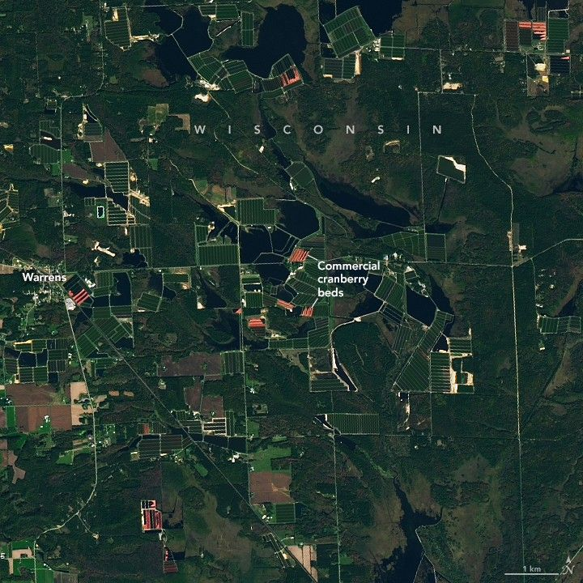

Cranberry Country, Wisconsin
Known as America’s Dairyland, Wisconsin produces the most cheese of any state and trails only California in the production of milk. Less famously, the state outpaces all others in a key part of many Thanksgiving menus. Wisconsin is the leading producer of cranberries in the U.S., with its annual hauls accounting for more than half of the country’s total yield.
The wetlands, cool climate, and sandy, acidic soils of central and northern Wisconsin provide the foundation for raising the tart berry successfully. This satellite image shows geometric networks of cranberry beds alongside small lakes near the town of Warrens, the “Cranberry Capital of Wisconsin.” It was acquired with the OLI-2 (Operational Land Imager-2) on Landsat 9 on October 13, 2025, during the autumn harvest season.
When berries are ripe, growers flood fields with up to a foot of water and then use specialized machines to knock fruit off the vines. Because cranberries contain pockets of air, they float to the surface—turning entire fields red—to be corralled and removed. Beds are not all flooded at once; satellite images acquired throughout the fall show different areas appearing red at different times.
Cranberries are native to Wisconsin marshes, and Native Americans have harvested the fruit for centuries. Commercial production in Wisconsin began in the mid-19th century and expanded as technology and cultivation methods improved. Around 1950, harvesting largely shifted from hand rakes to machines. By 1956, Wisconsin was the second-largest cranberry producer in the U.S. after Massachusetts, and in 1994 it took over the top spot. Today, cranberries in Wisconsin are an approximately $1 billion industry that employs nearly 4,000 people.
In mid-November, as Thanksgiving approaches, the brilliant red berries are on their way to be sold in markets or processed for use in sauces, juices, and other products. Meanwhile, the vines turn deep purple and go dormant. Growers prepare the beds for winter by again flooding the fields to cover plants in a protective layer of ice. They also coat the ice in sand, which will become part of the substrate and rejuvenate growth in the spring. With the right care, a cranberry plant can produce fruit for 50 years or more.